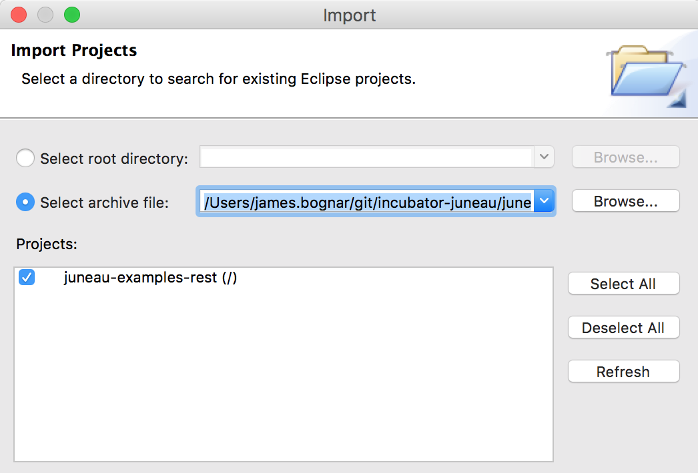
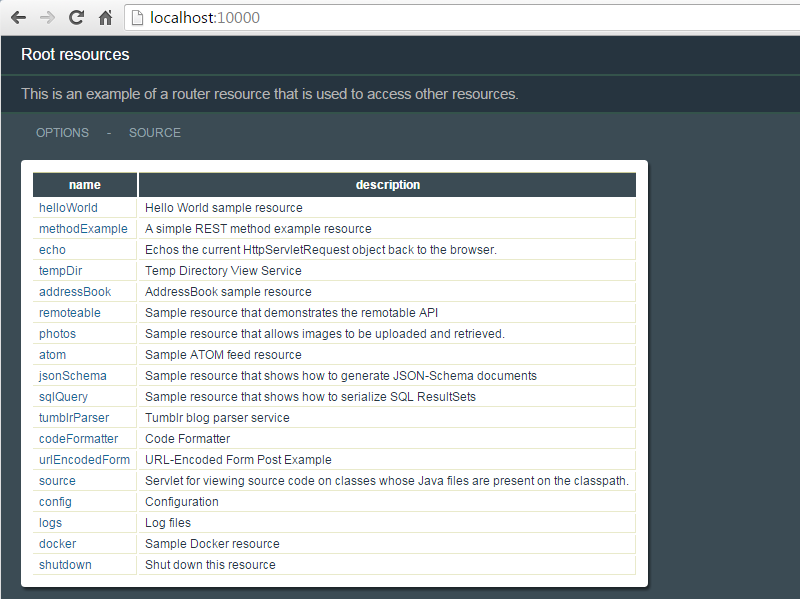
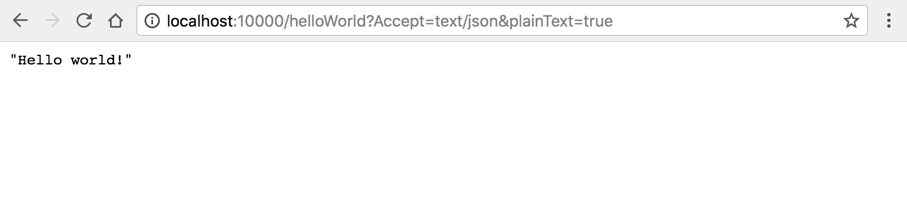
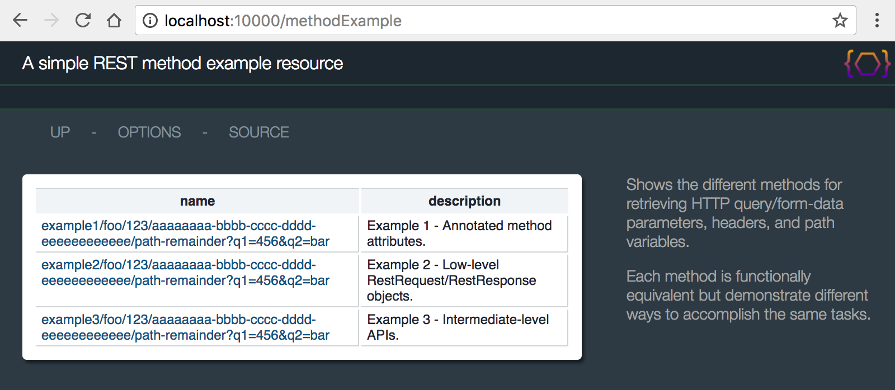
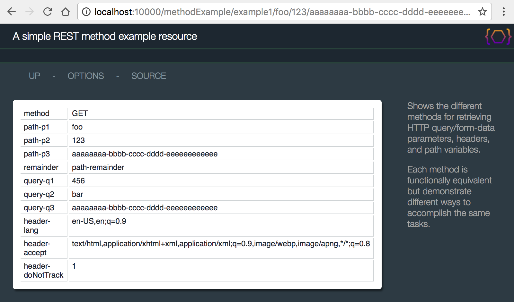
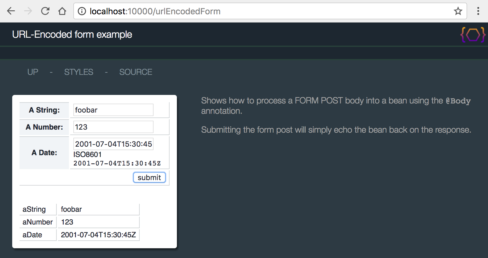
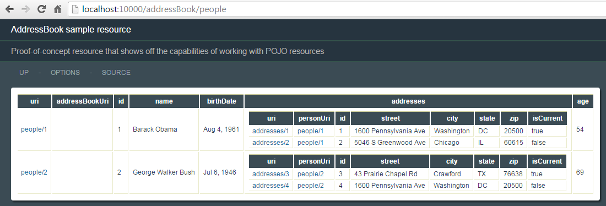
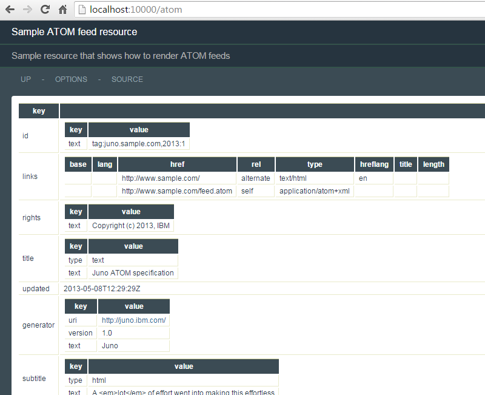
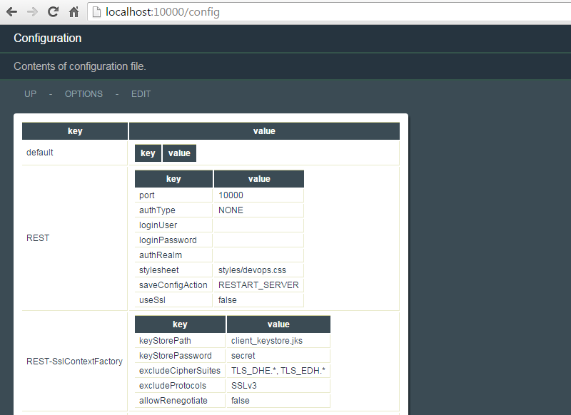
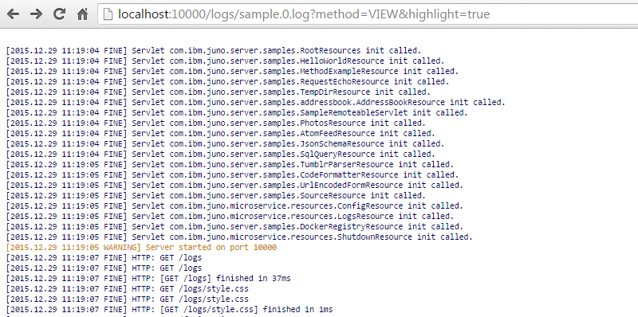

juneau-examples-rest-7.0.0.zip
The juneau-examples-rest project includes everything you need to start the Samples REST
microservice in an Eclipse workspace.
This project is packaged as a Juneau Microservice project that allows REST resources to be started
using embedded Jetty.
Instructions on how to install juneau-examples-rest project
Download the juneau-examples-rest-7.0.0.zip file from the downloads page
(located in the binaries) and import it into your workspace as an existing project:

Select the archive file and import the project:

Once loaded, you should see the following project structure:

The microservice can be started from the juneau-examples-rest.launch file.
It will start up the microservice on port 10000 which you can then view through a browser:

5.2.1 - RootResources
The RootResources class is the main page for the REST microservice.
It serves as the jumping-off point for the other resources.
The class hierarchy for this class is:
-
{@link org.apache.juneau.rest.RestServlet org.apache.juneau.rest.RestServlet}
Contains all the REST servlet logic.
-
{@link org.apache.juneau.rest.RestServletDefault org.apache.juneau.rest.RestServletDefault}
Defines default serializers and parsers, and OPTIONs page logic.
-
{@link org.apache.juneau.rest.RestServletGroupDefault org.apache.juneau.rest.RestServletGroupDefault}
Specialized subclass for grouping other resources
-
{@link org.apache.juneau.microservice.ResourceGroup org.apache.juneau.microservice.ResourceGroup}
Specialized subclass when using the Microservice API.
-
org.apache.juneau.rest.samples.RootResources
Pointing a browser to the resource shows the following:

The RootResources class can also be defined as a servlet in a web.xml file:
<web-app version='2.3'>
<servlet>
<servlet-name>RootResources</servlet-name>
<servlet-class>org.apache.juneau.rest.samples.RootResources</servlet-class>
</servlet>
<servlet-mapping>
<servlet-name>RootResources</servlet-name>
<url-pattern>/*</url-pattern>
</servlet-mapping>
</web-app>
The RootResources class consists entirely of annotations:
/**
* Sample REST resource showing how to implement a "router" resource page.
*/
@RestResource(
path="/",
messages="nls/RootResources",
htmldoc=@HtmlDoc(
navlinks={
"options: ?method=OPTIONS"
}
),
children={
HelloWorldResource.class,
MethodExampleResource.class,
RequestEchoResource.class,
TempDirResource.class,
AddressBookResource.class,
SampleRemoteableServlet.class,
PhotosResource.class,
AtomFeedResource.class,
JsonSchemaResource.class,
SqlQueryResource.class,
TumblrParserResource.class,
CodeFormatterResource.class,
UrlEncodedFormResource.class,
SourceResource.class,
ConfigResource.class,
LogsResource.class,
DockerRegistryResource.class,
ShutdownResource.class
}
)
public class RootResources extends ResourceGroup {
private static final long serialVersionUID = 1L;
}
The resource bundle contains the localized strings for the resource:
#--------------------------------------------------------------------------------
# RootResources labels
#--------------------------------------------------------------------------------
title = Root resources
description = This is an example of a router resource that is used to access other resources.
The title and description keys identify the localized values
return by the {@link org.apache.juneau.rest.RestRequest#getServletTitle()} and
{@link org.apache.juneau.rest.RestRequest#getServletDescription()} methods.
The children annotation defines the child resources of this router resource.
These are resources whose paths are relative to the parent resource.
Child resources must also be subclasses of {@link org.apache.juneau.rest.RestServlet}, and
must specify a {@link org.apache.juneau.rest.annotation.RestResource#path() @RestResource.path()} annotation to
identify the subpath of the child.
For example, the HelloWorldResource class is annotated as follows:
@RestResource(messages="nls/HelloWorldResource", path="/helloWorld")
public class HelloWorldResource extends Resource {
It should be noted that child resources do not need to be defined this way.
They could also be defined as servlets in the same way as the root resource.
The children annotation approach simply makes it easier to define them without having to touch the
web.xml file again.
Child resources can also be defined programmatically by using the
{@link org.apache.juneau.rest.RestContextBuilder#children(Class[])} method.
Note that these router pages can be arbitrarily nested deep.
You can define many levels of router pages for arbitrarily hierarchical REST interfaces.
-
Let's step back and describe what's going on here:
During servlet initialization of the RootResources object, the toolkit looks for the
@RestResource.children() annotation.
If it finds it, it instantiates instances of each class and recursively performs servlet initialization
on them.
It then associates the child resource with the parent by the name specified by the
@RestResource.path() annotation on the child class.
When a request for the child URL (/helloWorld) is received, the RootResources servlet
gets the request and sees that the URL remainder matches one of its child resources.
It then forwards the request to the child resource for processing.
The request passed to the child resource is the same as if the child resource had been deployed
independently (e.g. path-info, resource-URI, and so forth).
5.2.2 - HelloWorldResource
The HelloWorldResource class is a simple resource that prints a "Hello world!" message.
/**
* Sample REST resource that prints out a simple "Hello world!" message.
*/
@RestResource(
messages="nls/HelloWorldResource",
path="/helloWorld",
htmldoc=@HtmlDoc(
navlinks={
"up: request:/..",
"options: servlet:/?method=OPTIONS"
}
)
)
public class HelloWorldResource extends Resource {
private static final long serialVersionUID = 1L;
/** GET request handler */
@RestMethod(name=GET, path="/*")
public String sayHello() {
return "Hello world!";
}
}
#--------------------------------------------------------------------------------
# HelloWorldResource labels
#--------------------------------------------------------------------------------
title = Hello World sample resource
description = Simplest possible resource
sayHello.summary = Responds with "Hello world!"
The class hierarchy for this class is:
-
{@link org.apache.juneau.rest.RestServlet org.apache.juneau.rest.RestServlet}
Contains all the REST servlet logic.
-
{@link org.apache.juneau.rest.RestServletDefault org.apache.juneau.rest.RestServletDefault}
Defines default serializers and parsers, and OPTIONs page logic.
-
{@link org.apache.juneau.microservice.Resource org.apache.juneau.microservice.Resource}
Specialized subclass when using the Microservice API.
org.apache.juneau.rest.samples.HelloWorldResource
Pointing a browser to the resource shows the following:

Using the special &Accept=text/json and &plainText=true parameters
allows us to see this page rendered as JSON:

5.2.3 - MethodExampleResource
The MethodExampleResource class provides examples of the following:
-
Using the {@link org.apache.juneau.rest.Redirect} object to perform redirections.
-
Using the various Java method parameter annotations to retrieve request attributes, parameters, etc.
-
Using the annotation programmatic equivalents on the {@link org.apache.juneau.rest.RestRequest} object.
-
Setting response POJOs by either returning them or using the
{@link org.apache.juneau.rest.RestResponse#setOutput(Object)} method.
The resource is provided to show how various HTTP entities (e.g. parameters, headers) can be accessed
as either annotated Java parameters, or through methods on the RestRequest object.
/**
* Sample REST resource that shows how to define REST methods and OPTIONS pages
*/
@RestResource(
path="/methodExample",
messages="nls/MethodExampleResource",
htmldoc=@HtmlDoc(
navlinks={
"up: request:/..",
"options: servlet:/?method=OPTIONS"
}
)
)
public class MethodExampleResource extends Resource {
private static final long serialVersionUID = 1L;
/** Example GET request that redirects to our example method */
@RestMethod(name=GET, path="/")
public Redirect doExample() throws Exception {
return new Redirect("example1/xxx/123/{0}/xRemainder?q1=123&q2=yyy",
UUID.randomUUID());
}
/**
* Methodology #1 - GET request using annotated attributes.
* This approach uses annotated parameters for retrieving input.
*/
@RestMethod(name=GET, path="/example1/{p1}/{p2}/{p3}/*")
public String example1(
@Method String method, // HTTP method.
@Path String p1, // Path variables.
@Path int p2,
@Path UUID p3,
@Query("q1") int q1, // Query parameters.
@Query("q2") String q2,
@Query("q3") UUID q3,
@PathRemainder String remainder, // Path remainder after pattern match.
@Header("Accept-Language") String lang, // Headers.
@Header("Accept") String accept,
@Header("DNT") int doNotTrack
) {
// Send back a simple String response
String output = String.format(
"method=%s, p1=%s, p2=%d, p3=%s, remainder=%s, q1=%d, q2=%s, q3=%s, lang=%s, accept=%s, dnt=%d",
method, p1, p2, p3, remainder, q1, q2, q3, lang, accept, doNotTrack);
return output;
}
/**
* Methodology #2 - GET request using methods on RestRequest and RestResponse.
* This approach uses low-level request/response objects to perform the same as above.
*/
@RestMethod(name=GET, path="/example2/{p1}/{p2}/{p3}/*")
public String example2(
RestRequest req, // A direct subclass of HttpServletRequest.
RestResponse res // A direct subclass of HttpServletResponse.
) {
// HTTP method.
String method = req.getMethod();
// Path variables.
RequestPathMatch path = req.getPathMatch();
String p1 = path.get("p1", String.class);
int p2 = path.get("p2", int.class);
UUID p3 = path.get("p3", UUID.class);
// Query parameters.
RequestQuery query = req.getQuery();
int q1 = query.get("q1", 0, int.class);
String q2 = query.get("q2", String.class);
UUID q3 = query.get("q3", UUID.class);
// Path remainder after pattern match.
String remainder = req.getPathMatch().getRemainder();
// Headers.
String lang = req.getHeader("Accept-Language");
String accept = req.getHeader("Accept");
int doNotTrack = req.getHeaders().get("DNT", int.class);
// Send back a simple String response
String output = String.format(
"method=%s, p1=%s, p2=%d, p3=%s, remainder=%s, q1=%d, q2=%s, q3=%s, lang=%s, accept=%s, dnt=%d",
method, p1, p2, p3, remainder, q1, q2, q3, lang, accept, doNotTrack);
res.setOutput(output); // Or use getWriter().
}
/**
* Methodology #3 - GET request using special objects.
* This approach uses intermediate-level APIs.
* The framework recognizes the parameter types and knows how to resolve them.
*/
@RestMethod(name=GET, path="/example3/{p1}/{p2}/{p3}/*")
public String example3(
HttpMethod method, // HTTP method.
RequestPathMatch path, // Path variables.
RequestQuery query, // Query parameters.
RequestHeaders headers, // Headers.
AcceptLanguage lang, // Specific header classes.
Accept accept
) {
// Path variables.
String p1 = path.get("p1", String.class);
int p2 = path.get("p2", int.class);
UUID p3 = path.get("p3", UUID.class);
// Query parameters.
int q1 = query.get("q1", 0, int.class);
String q2 = query.get("q2", String.class);
UUID q3 = query.get("q3", UUID.class);
// Path remainder after pattern match.
String remainder = path.getRemainder();
// Headers.
int doNotTrack = headers.get("DNT", int.class);
// Send back a simple String response
String output = String.format(
"method=%s, p1=%s, p2=%d, p3=%s, remainder=%s, q1=%d, q2=%s, q3=%s, lang=%s, accept=%s, dnt=%d",
method, p1, p2, p3, remainder, q1, q2, q3, lang, accept, doNotTrack);
res.setOutput(output);
}
}
The class consists of 4 methods:
-
doExample()
The root page.
Performs a simple redirection to the doGetExample1() method using a
{@link org.apache.juneau.rest.Redirect} object.
-
example1()
Shows how to use the following annotations:
- {@link org.apache.juneau.rest.annotation.Path @Path}
- {@link org.apache.juneau.rest.annotation.Query @Query}
- {@link org.apache.juneau.rest.annotation.Header @Header}
- {@link org.apache.juneau.rest.annotation.Method @Method}
- {@link org.apache.juneau.rest.annotation.PathRemainder @PathRemainder}
Method returns a POJO to be serialized as the output.
-
example2()
Identical to doGetExample1() but shows how to use the
{@link org.apache.juneau.rest.RestRequest} and {@link org.apache.juneau.rest.RestResponse} objects:
- {@link org.apache.juneau.rest.RestRequest#getPathMatch()}
- {@link org.apache.juneau.rest.RestRequest#getQuery()}
- {@link org.apache.juneau.rest.RestRequest#getFormData()}
- {@link org.apache.juneau.rest.RestRequest#getHeaders()}
- {@link org.apache.juneau.rest.RestRequest#getMethod()}
- {@link org.apache.juneau.rest.RequestPathMatch#getRemainder()}
Method sets the POJO to be serialized using the {@link org.apache.juneau.rest.RestResponse#setOutput(Object)} method.
-
example3()
Identical to doGetExample1() but uses automatically resolved parameters based on class type.
Juneau automatically recognizes specific class types such as common header types and automatically
resolves them to objects for you.
See Rest Resources /
Method Signature for the list of all automatically support parameter types, and
{@link org.apache.juneau.rest.annotation.RestResource#paramResolvers() @RestResource.paramResolvers()}
for defining your own custom parameter type resolvers.
There's a lot going on in this method.
Notice how you're able to access URL attributes, parameters, headers, and content as parsed POJOs.
All the input parsing is already done by the toolkit.
You simply work with the resulting POJOs.
As you might notice, using annotations typically results in fewer lines of code and are therefore usually
preferred over the API approach, but both are equally valid.
When you visit this page through the router page, you can see the following (after the automatic
redirection occurs):

Notice how the conversion to POJOs is automatically done for us, even for non-standard POJOs such as UUID.
Self-documenting design through Swagger OPTIONS pages
One of the main features of Juneau is that it produces OPTIONS pages for self-documenting design (i.e. REST
interfaces that document themselves).
Much of the information populated on the OPTIONS page is determined through reflection.
This basic information can be augmented with information defined through:
-
Annotations - An example of this was shown in the
SystemPropertiesResource example above.
Localized strings can be pulled from resource bundles using the $L localization variable.
-
Resource bundle properties - Described in detail in this section.
-
Swagger JSON files with the same name and location as the resource class (e.g.
MethodExampleResource.json).
Localized versions are defined by appending the locale to the file name (e.g.
MethodExampleResource_ja_JP.json);
OPTIONS pages are simply serialized {@link org.apache.juneau.dto.swagger.Swagger} DTO beans.
Localized versions of these beans are retrieved using the
{@link org.apache.juneau.rest.RestRequest#getSwagger()} method.
To define an OPTIONS request handler, the {@link org.apache.juneau.rest.RestServletDefault} class defines
the following Java method:
/** OPTIONS request handler */
@RestMethod(name=OPTIONS, path="/*")
public Swagger getOptions(RestRequest req) {
return req.getSwagger();
}
The OPTIONS link that you see on the HTML version of the page is created
through a property defined by the {@link org.apache.juneau.html.HtmlDocSerializer} class
and specified on the resource class annotation:
@RestResource(
htmldoc=@HtmlDoc(
navlinks={
"options: servlet:/?method=OPTIONS"
}
)
)
This simply creates a link that's the same URL as the resource URL appended with "?method=OPTIONS",
which is a shorthand way that the framework provides of defining overloaded GET requests.
Links using relative or absolute URLs can be defined this way.
Metadata about the servlet class is combined with localized strings from a properties file associated
through a @RestResource(messages="nls/MethodExampleResources") annotation.
The properties file contains localized descriptions for the resource, resource methods, and method
parameters.
#--------------------------------------------------------------------------------
# MethodExampleResource labels
#--------------------------------------------------------------------------------
title = A simple REST method example resource
doGetExample.summary = Sample GET method
doGetExample1.summary = Sample GET using annotations
doGetExample1.req.path.a1.description = Sample variable
doGetExample1.req.path.a2.description = Sample variable
doGetExample1.req.path.a3.description = Sample variable
doGetExample1.req.query.p1.description = Sample parameter
doGetExample1.req.query.p2.description = Sample parameter
doGetExample1.req.query.p3.description = Sample parameter
doGetExample1.req.header.Accept-Language.description = Sample header
doGetExample1.req.header.DNT.description = Sample header
doGetExample2.summary = Sample GET using Java APIs
doGetExample2.req.path.a1.description = Sample variable
doGetExample2.req.path.a2.description = Sample variable
doGetExample2.req.path.a3.description = Sample variable
doGetExample2.req.query.p1.description = Sample parameter
doGetExample2.req.query.p2.description = Sample parameter
doGetExample2.req.query.p3.description = Sample parameter
doGetExample2.req.header.Accept-Language.description = Sample header
doGetExample2.req.header.DNT.description = Sample header
getOptions.summary = View these options
Clicking the options link on the page presents you with information about how to use this resource:

This page (like any other) can also be rendered in JSON or XML by using the &Accept URL parameter.
5.2.4 - UrlEncodedFormResource
The UrlEncodedFormResource class provides examples of the following:
-
How to use form entry beans to process form POSTs.
-
How to use the {@link org.apache.juneau.rest.RestRequest#getClasspathReaderResource(String)} method to
serve up static files with embedded string variables.
The class is shown below:
/**
* Sample REST resource for loading URL-Encoded form posts into POJOs.
*/
@RestResource(
path="/urlEncodedForm",
messages="nls/UrlEncodedFormResource"
)
public class UrlEncodedFormResource extends Resource {
private static final long serialVersionUID = 1L;
/** GET request handler */
@RestMethod(name=GET, path="/")
public ReaderResource doGet(RestRequest req) throws IOException {
return req.getClasspathReaderResource("UrlEncodedForm.html", true);
}
/** POST request handler */
@RestMethod(name=POST, path="/")
public Object doPost(@Body FormInputBean input) throws Exception {
// Just mirror back the request
return input;
}
public static class FormInputBean {
public String aString;
public int aNumber;
@BeanProperty(pojoSwaps=CalendarSwap.ISO8601DT.class)
public Calendar aDate;
}
}
The {@link org.apache.juneau.rest.RestRequest#getClasspathReaderResource(String,boolean)} method pulls in the following
file located in the same package as the class:
TODO - Needs update
<html>
<head>
<meta http-equiv="Content-Type" content="text/html;charset=UTF-8">
<style type='text/css'>
@import '$R{servletURI}/style.css';
</style>
<script type="text/javascript">
// Load results from IFrame into this document.
function loadResults(buff) {
var doc = buff.contentDocument || buff.contentWindow.document;
var buffBody = doc.getElementById('data');
document.getElementById('results').innerHTML = buffBody.innerHTML;
}
</script>
</head>
<body>
<h1>$R{servletTitle}</h1>
<h2>$R{servletDescription}</h2>
<div class='data'>
<form id='form' action='$R{servletURI}' method='POST' target='buff'>
<table>
<tr>
<th>$L{aString}</th>
<td><input name="aString" type="text"></td>
</tr>
<tr>
<th>$L{aNumber}</th>
<td><input name="aNumber" type="number"></td>
</tr>
<tr>
<th>$L{aDate}</th>
<td><input name="aDate" type="datetime"> (ISO8601, e.g. "<code>2001-07-04T15:30:45Z</code>")</td>
</tr>
<tr>
<td colspan='2' align='right'><button type="submit">$L{submit}</button></td>
</tr>
</table>
</form>
<br>
<div id='results'>
</div>
</div>
<iframe name='buff' style='display:none' onload="parent.loadResults(this)"></iframe>
</body>
</html>
The $L variables are string variable that pull in localized values from the resource bundle:
#--------------------------------------------------------------------------------
# UrlEncodedFormResource labels
#--------------------------------------------------------------------------------
title = URL-Encoded Form Post Example
description = Shows how URL-Encoded form input can be loaded into POJOs. POJO is simply echoed back.
aString = A String:
aNumber = A Number:
aDate = A Date:
submit = submit
The $R variables are request string variables.
In this case, $R{servletTitle} and $R{servletDescription} resolve to the values returned by
{@link org.apache.juneau.rest.RestRequest#getServletTitle()} and
{@link org.apache.juneau.rest.RestRequest#getServletDescription()}.
Pointing a browser to the resource shows the following:

Entering some values and clicking submit causes the form bean to be populated
and returned back as a POJO response:

Another option is to construct the HTML form in Java using HTML5 beans.
This is arguably a better approach since it's typically cleaner with less code, and the headers/links
are already part of the page.
import static org.apache.juneau.dto.html5.HtmlBuilder.*;
/** GET request handler */
@RestMethod(name=GET, path="/")
public Div doGet(RestRequest req) {
return div(
script("text/javascript",
"\n // Load results from IFrame into this document."
+"\n function loadResults(buff) {"
+"\n var doc = buff.contentDocument || buff.contentWindow.document;"
+"\n var buffBody = doc.getElementById('data');"
+"\n document.getElementById('results').innerHTML = buffBody.innerHTML;"
+"\n }"
),
form().id("form").action(req.getServletURI()).method(POST).target("buff").children(
table(
tr(
th(req.getMessage("aString")),
td(input().name("aString").type("text"))
),
tr(
th(req.getMessage("aNumber")),
td(input().name("aNumber").type("number"))
),
tr(
th(req.getMessage("aDate")),
td(input().name("aDate").type("datetime"), " (ISO8601, e.g. ", code("2001-07-04T15:30:45Z"), \" )")
),
tr(
td().colspan(2).style("text-align:right").children(
button("submit", req.getMessage("submit"))
)
)
)
),
br(),
div().id("results"),
iframe().name("buff").style("display:none").onload("parent.loadResults(this)")
);
}
Additional Information
-
{@link org.apache.juneau.rest.RestContextBuilder#vars(Class[])}
- Servlet and request variables.
-
{@link org.apache.juneau.rest.RestCallHandler#getSessionObjects(RestRequest)}
- Var resolver session objects.
5.2.5 - RequestEchoResource
The RequestEchoResource class shows how existing complex POJOs can be serialized to a variety of
content types.
The example simply takes the incoming HttpServletRequest object and serializes it.
It provides examples of the following:
-
Using the {@link org.apache.juneau.rest.annotation.RestResource#properties() @RestResource.properties()}
annotation to set serializer properties.
-
Using the {@link org.apache.juneau.rest.annotation.RestResource#beanFilters() @RestResource.beanFilters()}
and {@link org.apache.juneau.rest.annotation.RestResource#pojoSwaps() @RestResource.pojoSwaps()}
annotations to set serializer transforms.
-
Using the {@link org.apache.juneau.rest.annotation.Properties @Properties} annotation to set
serializers properties programmatically on a request.
The class is shown below:
/**
* Sample REST resource for echoing HttpServletRequests back to the browser
*/
@RestResource(
path="/echo",
messages="nls/RequestEchoResource",
htmldoc=@HtmlDoc(
navlinks={
"up: request:/..",
"options: servlet:/?method=OPTIONS"
}
),
properties={
@Property(name=SERIALIZER_maxDepth, value="10"),
@Property(name=SERIALIZER_detectRecursions, value="true")
},
beanFilters={
// Interpret these as their parent classes, not subclasses
HttpServletRequest.class, HttpSession.class, ServletContext.class,
},
pojoSwaps={
// Add a special POJO swap for Enumerations
EnumerationSwap.class
}
)
public class RequestEchoResource extends Resource {
/** GET request handler */
@RestMethod(name=GET, path="/*", converters={Queryable.class,Traversable.class})
public HttpServletRequest doGet(RestRequest req, RestResponse res, @Properties ObjectMap properties) {
// Set the HtmlDocSerializer title programmatically.
res.setPageTitle(req.getPathInfo());
// Just echo the request back as the response.
return req;
}
}
Again, there's a lot going on here that's new that requires some explanation.
The HttpServletRequest object is not a tree-shaped POJO model.
Instead, it contains lots of loops that can cause stack overflow errors if you were to try
to serialize it as-is.
Also, you want to look only at the properties defined on the HttpServletRequest class,
not implementation-specific (i.e. WAS or Jetty) fields which can get messy.
The {@link org.apache.juneau.rest.annotation.RestResource#properties() @RestResource.properties()},
{@link org.apache.juneau.rest.annotation.RestResource#beanFilters() @RestResopurce.beanFilters()}, and
{@link org.apache.juneau.rest.annotation.RestResource#pojoSwaps() @RestResopurce.pojoSwaps()}
annotations are used to set behavior properties on the resource's underlying bean context, serializers,
and parsers.
You're using them here to modify the behavior of serialization for all content types.
The annotations are functionally equivalent to using the {@link org.apache.juneau.rest.RestContextBuilder} class,
as follows:
/** Override the default rest serializers to add some transforms through an INIT hook*/
@RestHook(INIT)
public void init(RestContextBuilder builder) throws Exception {
// Add bean filters for the HttpServletRequest, HttpSession, and ServletContext objects
// so that you don't show vendor-specific properties on subclasses.
// Add Enumeration POJO swap to be able to render the contents of Enumeration properties.
// The max depth and detect recursion options prevent any possible runaway serializations.
// This shouldn't happen, but future JEE APIs may introduce deep hierarchies or loops.
builder
.beanFilters(HttpServletRequest.class, HttpSession.class, ServletContext.class)
.pojoSwaps(EnumerationSwap.class)
.setProperty(SERIALIZER_maxDepth, 10)
.setProperty(SERIALIZER_detectRecursions, true)
.pageLinks("{...}");
}
Note how the annotations generally require fewer lines of code.
Pointing a browser to the resource shows the following:

This gives you an idea of what kinds of POJO models can be serialized, since you are serializing a regular
old HttpServletRequest object.
5.2.6 - AddressBookResource
The AddressBookResource class is a proof-of-concept class that shows a true RESTful API using the
Juneau REST toolkit.
It provides examples of the following:
-
How to create RESTful interfaces using only POJOs.
-
How to use the {@link org.apache.juneau.xml.annotation.Xml @Xml} and
{@link org.apache.juneau.xml.annotation.XmlSchema @XmlSchema} annotations to provide XML namespaces
and alter how beans are handled by the XML serializer.
-
How to use the {@link org.apache.juneau.jena.annotation.Rdf @Rdf} and
{@link org.apache.juneau.xml.annotation.XmlSchema @RdfSchema} annotations to provide XML namespaces
and alter how beans are handled by the Jena serializers.
-
How to use the {@link org.apache.juneau.annotation.BeanProperty @BeanProperty} annotation
to alter how bean properties are handled by the serializers.
-
How to use the {@link org.apache.juneau.rest.annotation.RestMethod#name() RestMethod.name()} annotation
to create overloaded methods beyond the standard GET/PUT/POST/DELETE.
-
How to augment data in the OPTIONS page.
-
How to use the {@link org.apache.juneau.rest.client.RestClient} API to interact with the REST resource
using the same POJOs used to create the server-side API.
-
How to interact with the REST resource using only a browser.
-
Using the {@link org.apache.juneau.rest.converters.Traversable} converter to drill down into POJO models.
-
Using the {@link org.apache.juneau.rest.converters.Queryable} converter to provide search/view/sort
functionality against POJOs.
-
Using the {@link org.apache.juneau.rest.converters.Introspectable} converter to invoke methods on POJOs.
-
Using proxy interfaces.
Pointing a browser to the resource shows the following:

5.2.6.1 - Classes
The code is straightforward, consisting of the following classes:
-
package-info.java - Used to define XML namespaces for POJOs in this package.
-
IAddressBook - An interface describing the address book.
-
AddressBook - A data structure consisting of a list of
Persons.
-
Person, Address - In-memory representations of people and addresses.
-
CreatePerson, CreateAddress - POJOs for creating and updating people and address through the
REST interface.
-
AddressBookResource - The REST resource class.
-
For the sake of brevity, bean properties are defined as public fields instead of the normal
getters/setters.
Also, the examples are not the most efficient design and are not thread safe.
The package-info.java file is used to define XML and RDF namespaces on beans and properties in
this package.
Here you define a default XML and RDF namespaces and URL mappings for namespace short-names used
throughout this package.
It should be noted that these features are entirely optional, and there are often several ways of
defining these namespaces.
// XML and RDF namespaces used in this package
@Xml(ns="ab",
namespaces={
@XmlNs(name="ab", uri="http://www.apache.org/addressBook/"),
@XmlNs(name="per", uri="http://www.apache.org/person/"),
@XmlNs(name="addr", uri="http://www.apache.org/address/"),
@XmlNs(name="mail", uri="http://www.apache.org/mail/")
}
)
@Rdf(ns="ab",
namespaces={
@RdfNs(name="ab", uri="http://www.apache.org/addressBook/"),
@RdfNs(name="per", uri="http://www.apache.org/person/"),
@RdfNs(name="addr", uri="http://www.apache.org/address/"),
@RdfNs(name="mail", uri="http://www.apache.org/mail/")
}
)
package org.apache.juneau.examples.addressBook;
import org.apache.juneau.xml.annotation.*;
Our address book uses the following interface:
/**
* Interface used to help illustrate proxy interfaces.
* See {@link SampleRemoteableServlet}.
*/
public interface IAddressBook {
/** Return all people in the address book */
List<Person> getPeople();
/** Return all addresses in the address book */
List<Address> getAddresses();
/** Create a person in this address book */
Person createPerson(CreatePerson cp) throws Exception;
/** Find a person by id */
Person findPerson(int id);
/** Find an address by id */
Address findAddress(int id);
/** Find a person by address id */
Person findPersonWithAddress(int id);
/** Remove a person by id */
Person removePerson(int id);
}
Notes
-
You interface an interface for our address book so that you can later
use it to demonstrate the proxy interface support.
The AddressBook class is our address book.
It maintains a list of Person objects with some additional convenience methods:
/** Address book bean */
public class AddressBook extends LinkedList<Person> implements IAddressBook {
// The URL of this resource
private URI uri;
/** Bean constructor - Needed for instantiating on client side */
public AddressBook () {}
/** Normal constructor - Needed for instantiating on server side */
public AddressBook (URI uri) {...}
@Override /* IAddressBook */
public List<Person> getPeople() {
return this;
}
@Override /* IAddressBook */
public Person createPerson(CreatePerson cp) throws Exception {
Person p = new Person(uri, cp);
add(p);
return p;
}
@Override /* IAddressBook */
public Person findPerson(int id) {
for (Person p : this)
if (p.id == id)
return p;
return null;
}
@Override /* IAddressBook */
public Address findAddress(int id) {
for (Person p : this)
for (Address a : p.addresses)
if (a.id == id)
return a;
return null;
}
@Override /* IAddressBook */
public Person findPersonWithAddress(int id) {
for (Person p : this)
for (Address a : p.addresses)
if (a.id == id)
return p;
return null;
}
@Override /* IAddressBook */
public List<Address> getAddresses() {
Set<Address> s = new LinkedHashSet<Address>();
for (Person p : this)
for (Address a : p.addresses)
s.add(a);
return new ArrayList<Address>(s);
}
@Override /* IAddressBook */
public Person removePerson(int id) {
Person p = findPerson(id);
if (p != null)
remove(p);
return p;
}
/** Utility method */
public static Calendar toCalendar(String birthDate) throws Exception {
Calendar c = new GregorianCalendar();
c.setTime(DateFormat.getDateInstance(DateFormat.MEDIUM,
Locale.US).parse(birthDate));
return c;
}
}
Notes
-
The
@Xml(elementName="addressBook") annotation tells the toolkit that
when serialized as XML, the element name is <addressBook>.
Without this annotation, the element would revert to the generalized <array> tag.
-
The separate constructors are implementation specific and are needed because you're going to be
using this class in two ways, since you'll be demonstrating the client code as well as the server
code, and it eliminates having to define separate client-side and server-side POJOs:
- The normal constructor is used to programmatically create this object in the REST servlet code.
- The no-arg constructor is used by the Juneau parsers to construct this object in our client
side code.
The Person bean is defined as follows:
/** Person bean */
@Xml(ns="per")
@Rdf(prefix="per")
@Bean(typeName="person")
public class Person {
private static int nextPersonId = 1;
// Bean properties.
@Rdf(beanUri=true) public URI uri;
public URI addressBookUri;
public String id;
public String name;
@BeanProperty(swap=CalendarSwap.Medium.class) public Calendar birthDate;
public LinkedList<Address> addresses = new LinkedList<Address>();
/** Bean constructor - Needed for instantiating on server side */
public Person() {}
/** Normal constructor - Needed for instantiating on client side */
public Person(URI addressBookUri, CreatePerson cp) throws Exception {
this.id = nextPersonId++;
this.addressBookUri = addressBookUri;
if (addressBookUri != null)
this.uri = addressBookUri.resolve("people/" + id);
this.name = cp.name;
this.birthDate = cp.birthDate;
for (CreateAddress ca : cp.addresses)
this.addresses.add(new Address(addressBookUri, uri, ca));
}
/** Extra read-only bean property */
public int getAge() {
return new GregorianCalendar().get(Calendar.YEAR) - birthDate.get(Calendar.YEAR);
}
/** Convenience method - Add an address for this person */
public Address createAddress(CreateAddress ca) throws Exception {
Address a = new Address(addressBookUri, uri, ca);
addresses.add(a);
return a;
}
/** Extra method (for method invocation example) */
public String sayHello(String toPerson, int age) {
return name + " says hello to " + toPerson + " who is "
+ age + " years old";
}
}
Notes
-
The ns="per" annotations override the default "ab" namespace defined on the package.
It applies to this class and all properties of this class.
-
The
@Rdf(beanUri=true) annotation identifies the uri property
as the resource URI for this resource.
This property has special meaning for the RDF serializer.
The RDF serializer uses this property for the value of the rdf:resource attribute.
-
The
@BeanProperty(swap=CalendarSwap.Medium.class) annotation causes
the date field to be serialized in the format "MM dd, yyyy".
This could have also been specified globally on the resource level through the
{@link org.apache.juneau.rest.annotation.RestResource#properties} annotation.
The Address bean is defined as follows:
/**
* Address bean
*/
@Xml(prefix="addr")
@Rdf(prefix="addr")
@Bean(typeName="address")
public class Address {
private static int nextAddressId = 1;
// Bean properties
@Rdf(beanUri=true) public URI uri;
public URI personUri;
public int id;
@Xml(prefix="mail") @Rdf(prefix="mail")
public String street, city, state;
@Xml(prefix="mail") @Rdf(prefix="mail")
public int zip;
public boolean isCurrent;
/** Bean constructor - Needed for instantiating on client side */
public Address() {}
/** Normal constructor - Needed for instantiating on server side */
public Address(URI addressBookUri, URI personUri, CreateAddress ca) throws Exception {
this.id = nextAddressId++;
if (addressBookUri != null)
this.uri = addressBookUri.resolve("addresses/" + id);
this.personUri = personUri;
this.street = ca.street;
this.city = ca.city;
this.state = ca.state;
this.zip = ca.zip;
this.isCurrent = ca.isCurrent;
}
}
Notes
-
This class shows how the namespace can be overridden at the property level through the
@Xml(ns="mail") annotation.
The CreatePerson bean is used as the input data for creating a person.
/** Bean for creating a new person */
@Xml(ns="per")
@Rdf(ns="addr")
@Bean(typeName="person")
public class CreatePerson {
// Bean properties
public String name;
@BeanProperty(swap=CalendarSwap.Medium.class) public Calendar birthDate;
public LinkedList<CreateAddress> addresses;
/** Bean constructor - Needed for instantiating on server side */
public CreatePerson() {}
/** Normal constructor - Needed for instantiating on client side */
public CreatePerson(String name, Calendar birthDate, CreateAddress...addresses) {...}
}
The CreateAddress bean is used as the input data for creating an address.
/** Bean for creating a new address */
@Xml(ns="addr")
@Rdf(ns="addr")
@Bean(typeName="address")
public class CreateAddress {
// Bean properties
@Xml(ns="mail") @Rdf(ns="mail")
public String street, city, state;
@Xml(ns="mail") @Rdf(ns="mail")
public int zip;
public boolean isCurrent;
/** Bean constructor -Needed for instantiating on server side */
public CreateAddress() {}
/** Normal constructor - Needed for instantiating on client side */
public CreateAddress(String street, String city, String state, int zip,
boolean isCurrent) {...}
}
The AddressBookResource class is our REST resource class.
/**
* Proof-of-concept resource that shows off the capabilities of working with POJO resources.
* Consists of an in-memory address book repository.
*/
@RestResource(
path="/addressBook",
messages="nls/AddressBookResource",
// Links on the HTML rendition page.
// "request:/..." URIs are relative to the request URI.
// "servlet:/..." URIs are relative to the servlet URI.
// "$C{...}" variables are pulled from the config file.
htmldoc=@HtmlDoc(
navlinks={
"up: request:/..",
"options: servlet:/?method=OPTIONS",
"source: $C{Source/gitHub}/org/apache/juneau/examples/rest/addressbook/AddressBookResource.java"
}
),
// Allow INIT as a method parameter.
allowedMethodParams="*",
// Properties that get applied to all serializers and parsers.
properties={
// Use single quotes.
@Property(name=SERIALIZER_quoteChar, value="'"),
// Make RDF/XML readable.
@Property(name=RDF_rdfxml_tab, value="5"),
// Make RDF parsable by adding a root node.
@Property(name=RDF_addRootProperty, value="true"),
// Make URIs absolute so that we can easily reference them on the client side.
@Property(name=SERIALIZER_uriResolution, value="ABSOLUTE")
// Make the anchor text on URLs be just the path relative to the servlet.
@Property(name=HTML_uriAnchorText, value="SERVLET_RELATIVE")
},
// Our stylesheet for the HTML rendition.
stylesheet="styles/devops.css",
// Support GZIP encoding on Accept-Encoding header.
encoders=GzipEncoder.class,
// Swagger info.
contact="{name:'John Smith',email:'john@smith.com'}",
license="{name:'Apache 2.0',url:'http://www.apache.org/licenses/LICENSE-2.0.html'}",
version="2.0",
termsOfService="You're on your own.",
tags="[{name:'Java',description:'Java utility',externalDocs:{description:'Home page',
url:'http://juneau.apache.org'}}]",
externalDocs="{description:'Home page',url:'http://juneau.apache.org'}"
)
public class AddressBookResource extends ResourceJena {
private static final long serialVersionUID = 1L;
// The in-memory address book
private AddressBook addressBook;
@Override /* Servlet */
public void init() {
try {
// Create the address book
addressBook = new AddressBook(java.net.URI.create("servlet:/"));
// Add some people to our address book by default
addressBook.createPerson(
new CreatePerson(
"Barack Obama",
toCalendar("Aug 4, 1961"),
new CreateAddress("1600 Pennsylvania Ave", "Washington",
"DC", 20500, true),
new CreateAddress("5046 S Greenwood Ave", "Chicago",
"IL", 60615, false)
)
);
addressBook.createPerson(
new CreatePerson(
"George Walker Bush",
toCalendar("Jul 6, 1946"),
new CreateAddress("43 Prairie Chapel Rd", "Crawford",
"TX", 76638, true),
new CreateAddress("1600 Pennsylvania Ave", "Washington",
"DC", 20500, false)
)
);
} catch (Exception e) {
throw new RuntimeException(e);
}
}
/**
* [GET /]
* Get root page.
*/
@RestMethod(name=GET, path="/",
converters=Queryable.class
)
public Link[] getRoot() throws Exception {
return new Link[] {
new Link("people", "people"),
new Link("addresses", "addresses")
};
}
/**
* [GET /people/*]
* Get all people in the address book.
* Traversable transforming enabled to allow nodes in returned POJO tree to be addressed.
* Introspectable transforming enabled to allow public methods on the returned object to be invoked.
*/
@RestMethod(name=GET, path="/people/*",
converters={Traversable.class,Queryable.class,Introspectable.class}
)
public AddressBook getAllPeople() throws Exception {
return addressBook;
}
/**
* [GET /people/{id}/*]
* Get a single person by ID.
* Traversable transforming enabled to allow nodes in returned POJO tree to be addressed.
* Introspectable transforming enabled to allow public methods on the returned object to be invoked.
*/
@RestMethod(name=GET, path="/people/{id}/*",
converters={Traversable.class,Queryable.class,Introspectable.class}
)
public Person getPerson(@Path int id) throws Exception {
return findPerson(id);
}
/**
* [GET /addresses/*]
* Get all addresses in the address book.
*/
@RestMethod(name=GET, path="/addresses/*",
converters={Traversable.class,Queryable.class}
)
public List<Address> getAllAddresses() throws Exception {
return addressBook.getAddresses();
}
/**
* [GET /addresses/{id}/*]
* Get a single address by ID.
*/
@RestMethod(name=GET, path="/addresses/{id}/*",
converters={Traversable.class,Queryable.class}
)
public Address getAddress(@Path int id) throws Exception {
return findAddress(id);
}
/**
* [POST /people]
* Create a new Person bean.
*/
@RestMethod(name=POST, path="/people",
guards=AdminGuard.class
)
public Redirect createPerson(@Body CreatePerson cp) throws Exception {
Person p = addressBook.createPerson(cp);
return new Redirect("people/{0}", p.id);
}
/**
* [POST /people/{id}/addresses]
* Create a new Address bean.
*/
@RestMethod(name=POST, path="/people/{id}/addresses",
guards=AdminGuard.class
)
public Redirect createAddress(@Path int id, @Body CreateAddress ca) throws Exception {
Person p = findPerson(id);
Address a = p.createAddress(ca);
return new Redirect("addresses/{0}", a.id);
}
/**
* [DELETE /people/{id}]
* Delete a Person bean.
*/
@RestMethod(name=DELETE, path="/people/{id}",
guards=AdminGuard.class,
)
public String deletePerson(@Path int id) throws Exception {
addressBook.removePerson(id);
return "DELETE successful";
}
/**
* [DELETE /addresses/{id}]
* Delete an Address bean.
*/
@RestMethod(name=DELETE, path="/addresses/{id}",
guards=AdminGuard.class
)
public String deleteAddress(@Path int addressId) throws Exception {
Person p = addressBook.findPersonWithAddress(addressId);
if (p == null)
throw new RestException(SC_NOT_FOUND, "Person not found");
Address a = findAddress(addressId);
p.addresses.remove(a);
return "DELETE successful";
}
/**
* [PUT /people/{id}/*]
* Change property on Person bean.
*/
@RestMethod(name=PUT, path="/people/{id}/*",
guards=AdminGuard.class
)
public String updatePerson(RestRequest req, @Path int id, @PathRemainder
String remainder) throws Exception {
try {
Person p = findPerson(id);
PojoRest r = new PojoRest(p);
ClassMeta<?> cm = r.getClassMeta(remainder);
Object in = req.getBody().asType(cm);
r.put(remainder, in);
return "PUT successful";
} catch (Exception e) {
throw new RestException(SC_BAD_REQUEST, "PUT unsuccessful").initCause(e);
}
}
/**
* [PUT /addresses/{id}/*]
* Change property on Address bean.
*/
@RestMethod(name=PUT, path="/addresses/{id}/*",
guards=AdminGuard.class
)
public String updateAddress(RestRequest req, @Path int id,
@PathRemainder String remainder) throws Exception {
try {
Address a = findAddress(id);
PojoRest r = new PojoRest(a);
ClassMeta<?> cm = r.getClassMeta(remainder);
Object in = req.getBody().asType(cm);
r.put(remainder, in);
return "PUT successful";
} catch (Exception e) {
throw new RestException(SC_BAD_REQUEST, "PUT unsuccessful").initCause(e);
}
}
/**
* [INIT /]
* Reinitialize this resource.
*/
@RestMethod(name="INIT", path="/",
guards=AdminGuard.class
)
public String doInit() throws Exception {
init();
return "OK";
}
/**
* [GET /cognos]
* Get data in Cognos/XML format
*/
@RestMethod(name=GET, path="/cognos")
public DataSet getCognosData() throws Exception {
// The Cognos metadata
Column[] items = {
new Column("name", "xs:String", 255),
new Column("age", "xs:int"),
new Column("numAddresses", "xs:int")
.addPojoSwap(
new PojoSwap<Person,Integer>() {
@Override /* PojoSwap */
public Integer swap(BeanSession session, Person p) {
return p.addresses.size();
}
}
)
};
return new DataSet(items, addressBook, this.getBeanContext());
}
/**
* [OPTIONS /*]
* View resource options
*/
@Override /* RestServletDefault */
@RestMethod(name=OPTIONS, path="/*")
public Swagger getOptions(RestRequest req) {
return req.getSwagger();
}
/** Convenience method - Find a person by ID */
private Person findPerson(int id) throws RestException {
Person p = addressBook.findPerson(id);
if (p == null)
throw new RestException(SC_NOT_FOUND, "Person not found");
return p;
}
/** Convenience method - Find an address by ID */
private Address findAddress(int id) throws RestException {
Address a = addressBook.findAddress(id);
if (a == null)
throw new RestException(SC_NOT_FOUND, "Address not found");
return a;
}
}
Notes
-
The @RestResource.messages() annotation identifies
org/apache/juneau/samples/addressbook/nls/AddressBookResource.properties as the resource
bundle for localized message for this class.
-
You are setting XML_enableNamespaces to true to enable XML namespaces.
By default, XML namespace support is disabled per
{@link org.apache.juneau.xml.XmlSerializer#XML_enableNamespaces}, so you have to explicitly
enable it on our serializers.
-
The XML_autoDetectNamespaces setting is needed to get the XML serializer to add xmlns
attributes to the root elements.
This causes the XML serializer to scan the POJO objects for namespaces in order to populate the
root element.
There are other ways to do this, such as explicitly specifying the XML_defaultNamespaceUris
setting at either the resource or method level, which might be preferred in high-performance
environments.
However, XML_autoDetectNamespaces produces the simplest code for our example.
-
The updatePerson() and updateAddress() methods use a guard to only allow
administrators access.
For the sample code, the guard does nothing. It's up to the implementer to decide how to restrict
access.
-
The updatePerson() and updateAddress() methods use the
{@link org.apache.juneau.utils.PojoRest} class
to locate and update individual nodes in a POJO tree using the path remainder on the request.
-
The doInit() method shows an example of an overloaded method using the
@RestMethod(name=INIT) annotation.
-
The getOptions() method shows the default OPTIONS page augmented with some additional
information.
The OPTIONS page uses the servlet resource bundle to specify the labels so that they're globalizable.
title = AddressBook sample resource
description = Proof-of-concept resource that shows off the capabilities of working with POJO resources
getRoot.summary = Get root page
getRoot.description = Jumping off page for top-level Person and Address beans.
doInit.summary = Reinitialize this resource
doInit.description = Resets the address book to the original contents.
doInit.res.200.description = Returns the string "OK"
getAllPeople.summary = Get all people in the address book
getAllPeople.res.200.description = Returns a serialized List<Person>
getAllPeople.res.200.examples = {'text/json':"[\n\t{\n\t\turi:'http://hostname/addressBook/person/1',\n\t\taddressBookUri:'http://localhost/addressBook',\n\t\tid:1,\n\t\tname:'John Smith',\n\t\tbirthDate:'Jan 1, 2000',\n\t\taddresses:[\n\t\t\t{\n\t\t\t\turi:'http://localhost/addressBook/addresses/1',\n\t\t\t\tpersonUri:'http://localhost/addressBook/people/1',\n\t\t\t\tid:1,\n\t\t\t\tstreet:'101 Main St',\n\t\t\t\tcity:'Anywhere',\n\t\t\t\tstate:'NY',\n\t\t\t\tzip:12345,\n\t\t\t\tisCurrent:true\n\t\t\t}\n\t\t]\n\t}\n]"}
getPerson.summary = Get a single person by ID
getPerson.req.path.id.description = Person ID
getPerson.req.path.id.type = integer
getPerson.res.200.description = Returns a serialized Person bean
getPerson.res.200.examples = {'text/json':"{\n\turi:'http://hostname/addressBook/person/1',\n\taddressBookUri:'http://localhost/addressBook',\n\tid:1,\n\tname:'John Smith',\n\tbirthDate:'Jan 1, 2000',\n\taddresses:[\n\t\t{\n\t\t\turi:'http://localhost/addressBook/addresses/1',\n\t\t\tpersonUri:'http://localhost/addressBook/people/1',\n\t\t\tid:1,\n\t\t\tstreet:'101 Main St',\n\t\t\tcity:'Anywhere',\n\t\t\tstate:'NY',\n\t\t\tzip:12345,\n\t\t\tisCurrent:true\n\t\t}\n\t]\n\}"}
getPerson.res.404.description = Person ID not found
getAllAddresses.summary = Get all addresses in the address book
getAllAddresses.res.200.description = Returns a serialized List<Address>
getAllAddresses.res.200.examples = {'text/json':"[\n\t{\n\t\turi:'http://localhost/addressBook/addresses/1',\n\t\tpersonUri:'http://localhost/addressBook/people/1',\n\t\tid:1,\n\t\tstreet:'101 Main St',\n\t\tcity:'Anywhere',\n\t\tstate:'NY',\n\t\tzip:12345,\n\t\tisCurrent:true\n\t}\n]"}
getAddress.summary = Get a single address by ID
getAddress.req.path.id.description = Address ID
getAddress.req.path.id.type = integer
getAddress.res.200.description = Returns a serialized Address bean
getAddress.res.200.examples = {'text/json':"{\n\turi:'http://localhost/addressBook/addresses/1',\n\tpersonUri:'http://localhost/addressBook/people/1',\n\tid:1,\n\tstreet:'101 Main St',\n\tcity:'Anywhere',\n\tstate:'NY',\n\tzip:12345,\n\tisCurrent:true\n}"}
getAddress.res.404.description = Address ID not found
createPerson.summary = Create a new Person bean
createPerson.req.body.description = Serialized CreatePerson bean
createPerson.req.body.schema = {example:"{\n\tname:'John Smith',\n\tbirthDate:'Jan 1, 2000',\n\taddresses:[\n\t\t{\n\t\t\tstreet:'101 Main St',\n\t\t\tcity:'Anywhere',\n\t\t\tstate:'NY',\n\t\t\tzip:12345,\n\t\t\tisCurrent:true\n\t\t}\n\t]\n\}"}
createPerson.res.307.header.Location.description = URL of new person
createAddress.summary = Create a new Address bean
createAddress.req.path.id.description = Person ID
createAddress.req.path.id.type = integer
createAddress.req.body.schema = {example:"{\n\tstreet:'101 Main St',\n\tcity:'Anywhere',\n\tstate:'NY',\n\tzip:12345,\n\tisCurrent:true\n}"}
createAddress.res.307.header.Location.description = URL of new address
deletePerson.summary = Delete a Person bean
deletePerson.req.path.id.description = Person ID
deletePerson.req.path.id.type = integer
deletePerson.res.200.description = Returns the string "DELETE successful"
deletePerson.res.404.description = Person ID not found
deleteAddress.summary = Delete an Address bean
deleteAddress.req.path.id.description = Address ID
deleteAddress.res.200.description = Returns the string "DELETE successful"
deleteAddress.res.404.description = Address ID not found
updatePerson.summary = Change property on Person bean
updatePerson.req.path.id.description = Person ID
updatePerson.req.path.id.type = integer
updatePerson.req.body.description = Any object matching the field
updatePerson.res.200.description = Returns the string "PUT successful"
updatePerson.res.400.description = Invalid object type used
updatePerson.res.404.description = Person ID not found
updateAddress.summary = Change property on Address bean
updateAddress.req.path.id.description = Address ID
updateAddress.req.path.id.type = integer
updateAddress.req.body.description = Any object matching the field
updateAddress.res.200.description = Returns the string "PUT successful"
updateAddress.res.400.description = Invalid object type used
updateAddress.res.404.description = Address ID not foundv
getOptions.summary = View resource options
getCognosData.summary = Get data in Cognos/XML format
getCognosData.res.200.description = Returns a serialized DataSet
otherNotes = GZip support enabled. Public methods can be invoked by using the &Method URL parameter. 'text/cognos+xml' support available under root resource only
5.2.6.2 - Demo
Pointing a browser to the resource shows the results of running the getRoot() method:

Clicking the people link shows you the result of running the getAllPeople() method:

Notice how the URI properties automatically became hyperlinks.
Also notice how the dates are formatted as readable strings.
This was from the transform you added to the Calendar property.
Let's see what the output looks like in other formats:


Notice how our XML_enableNamespaces and XML_autoDetectNamespaces settings result
in namespaces being used.
Also notice how the @BeanProperty(uri=true) annotations caused the
uri properties to become XML attributes instead of elements.

Notice how the @BeanProperty(uri=true) annotations are used to identify
values for rdf:about values.
Also notice how URI properties are serialized as rdf:resource attributes.
Now lets look at the schema outputs that can be rendered that show information about the POJO classes
themselves.


Now let's see what else you can do.
Clicking on the first personUri link executes the getPerson() method, which renders a
serialized Person object:

Clicking on the OPTIONS link on the page shows you the Swagger doc generated from our annotations and
resource bundle properties:

5.2.6.3 - Traversable
Because you added the Traversable converter to the getPerson method, you can also address
child nodes in the POJO model through path remainders:


5.2.6.4 - Queryable
5.2.6.5 - Introspectable
The Introspectable converter on the getPerson method allows us to invoke public methods
on the addressed POJO (in this case, public methods on the String class):

5.2.6.6 - ClientTest
The ClientTest class is provided to demonstrate how POJOs can be serialized and parsed
through the REST interface using the RestClient class.
You'll notice that the class is a stand-alone executable that can be invoked as a plain Java process.
/**
* Sample client code for interacting with AddressBookResource
*/
public class ClientTest {
public static void main(String[] args) {
try {
System.out.println("Running client test...");
// Create a client to handle XML requests and responses.
RestClient client = RestClient.create().build();
RestClient xmlClient = RestClient.create().serializer(XmlSerializer.DEFAULT)
.parser(XmlParser.DEFAULT).build();
String root = "http://localhost:10000/addressBook";
// Get the current contents of the address book
AddressBook ab = client.doGet(root + "/people").getResponse(AddressBook.class);
System.out.println("Number of entries = " + ab.getPeople().size());
// Same, but use XML as the protocol both ways
ab = xmlClient.doGet(root + "/people").getResponse(AddressBook.class);
System.out.println("Number of entries = " + ab.getPeople().size());
// Delete the existing entries
for (Person p : ab.getPeople()) {
String r = client.doDelete(p.uri).getResponse(String.class);
System.out.println("Deleted person " + p.name + ", response = " + r);
}
// Make sure they're gone
ab = client.doGet(root + "/people").getResponse(AddressBook.class);
System.out.println("Number of entries = " + ab.getPeople().size());
// Add 1st person again
CreatePerson cp = new CreatePerson(
"Barack Obama",
toCalendar("Aug 4, 1961"),
new CreateAddress("1600 Pennsylvania Ave", "Washington", "DC", 20500, true),
new CreateAddress("5046 S Greenwood Ave", "Chicago", "IL", 60615, false)
);
Person p = client.doPost(root + "/people", cp).getResponse(Person.class);
System.out.println("Created person " + p.name + ", uri = " + p.uri);
// Add 2nd person again, but add addresses separately
cp = new CreatePerson(
"George Walker Bush",
toCalendar("Jul 6, 1946")
);
p = client.doPost(root + "/people", cp).getResponse(Person.class);
System.out.println("Created person " + p.name + ", uri = " + p.uri);
// Add addresses to 2nd person
CreateAddress ca = new CreateAddress("43 Prairie Chapel Rd", "Crawford", "TX", 76638, true);
Address a = client.doPost(p.uri + "/addresses", ca).getResponse(Address.class);
System.out.println("Created address " + a.uri);
ca = new CreateAddress("1600 Pennsylvania Ave", "Washington", "DC", 20500, false);
a = client.doPost(p.uri + "/addresses", ca).getResponse(Address.class);
System.out.println("Created address " + a.uri);
// Find 1st person, and change name
Person[] pp = client.doGet(root + "/people?q=(name='Barack+Obama')").getResponse(Person[].class);
String r = client.doPut(pp[0].uri + "/name", "Barack Hussein Obama").getResponse(String.class);
System.out.println("Changed name, response = " + r);
p = client.doGet(pp[0].uri).getResponse(Person.class);
System.out.println("New name = " + p.name);
} catch (Exception e) {
e.printStackTrace();
}
}
// Utility method
public static Calendar toCalendar(String birthDate) throws Exception {
Calendar c = new GregorianCalendar();
c.setTime(DateFormat.getDateInstance(DateFormat.MEDIUM).parse(birthDate));
return c;
}
}
The output from running this code is the following:
Running client test...
Number of entries = 2
Deleted person Barack Obama, response = DELETE successful
Deleted person George Walker Bush, response = DELETE successful
Number of entries = 0
Created person Barack Obama, uri = http://localhost:9081/sample/addressBook/people/3
Created person George Walker Bush, uri = http://localhost:9081/sample/addressBook/people/4
Created address http://localhost:9081/sample/addressBook/addresses/7
Created address http://localhost:9081/sample/addressBook/addresses/8
Changed name, response = PUT successful
New name = Barack Hussein Obama
5.2.6.7 - Browser Tips
The Juneau architecture is designed to make it easy to debug REST resources using nothing more than a
browser.
The same actions done programmatically in the last section can also be done using URLs.
By default, you can override the HTTP Method and Content through GET parameters, as shown below:
// Delete the existing entries
http://localhost:10000/addressBook/people/1?method=DELETE
http://localhost:10000/addressBook/people/2?method=DELETE
// Add 1st person again
http://localhost:10000/addressBook/people?method=POST&content={name:'Barack Obama',birthDate:'Aug 4, 1961',addresses:[{street:'1600 Pennsylvania Ave',city:'Washington',state:'DC',zip:20500,isCurrent:true},{street:'5046 S Greenwood Ave',city:'Chicago',state:'IL',zip:60615,isCurrent:false}]}
// Add 2nd person again
http://localhost:10000/addressBook/people?method=POST&content={name:'George Walker Bush',birthDate:'Jul 6, 1946'}
http://localhost:10000/addressBook/people/4/addresses?method=POST&content={street:'43 Prairie Chapel Rd',city:'Crawford',state:'TX',zip:76638,isCurrent:true}
http://localhost:10000/addressBook/people/4/addresses?method=POST&content={street:'1600 Pennsylvania Ave',city:'Washington',state:'DC',zip:20500,isCurrent:false}
// Change name of 1st person
http://localhost:10000/addressBook/people/3/name?method=PUT&content="'Barack Hussein Obama'"
The ability to overload methods is enabled through the
RestResource.allowMethodParam()
5.2.7 - SampleRemoteableServlet
The SampleRemoteableServlet class shows examples of the following:
-
Extending the {@link org.apache.juneau.rest.remoteable.RemoteableServlet} class to create a proxy
service.
-
Using the {@link org.apache.juneau.rest.client.RestClient} class to create remoteable proxy interfaces.
The RemoteableServlet class has a single abstract method,
{@link org.apache.juneau.rest.remoteable.RemoteableServlet#getServiceMap()}, that defines interface
keys and POJO values.
The SampleRemoteableServlet exposes the AddressBook bean from the previous example as a
service.
@RestResource(
path="/remoteable",
messages="nls/SampleRemoteableServlet",
title="Remoteable Service Proxy API",
description="Sample class showing how to use remoteable proxies. The list below are exposed services that
can be retrieved using RestClient.getProxyInterface(Class).",
htmldoc=@HtmlDoc(
navlinks={
"up: request:/..",
"options: servlet:/?method=OPTIONS"
}
),
// Allow us to use method=POST from a browser.
allowedMethodParams="*"
)
public class SampleRemoteableServlet extends RemoteableServlet {
AddressBook addressBook = new AddressBook();
@Override /* RemoteableServlet */
protected Map<Class<?>,Object> getServiceMap() throws Exception {
Map<Class<?>,Object> m = new LinkedHashMap<Class<?>,Object>();
// In this simplified example, you expose the same POJO service under two different interfaces.
// One is IAddressBook which only exposes methods defined on that interface, and
// the other is AddressBook itself which exposes all methods defined on the class itself.
m.put(IAddressBook.class, addressBook);
m.put(AddressBook.class, addressBook);
return m;
}
}
Pointing a browser to the resource shows the following:

Clicking the hyperlinks on each shows you the list of methods that can be invoked on that service.
Note that the IAddressBook link shows that you can only invoke methods defined on that
interface, whereas the AddressBook link shows ALL public methods defined on that class.
Since AddressBook extends from LinkedList, you may notice familiar collections
framework methods listed.


-
As good practice, you'll want to use interfaces to prevent all public methods from being exposed.
Proxy interfaces are then retrieved using the {@link org.apache.juneau.rest.client.RestClient#getRemoteableProxy(Class)} method.
The client side code for invoking this method is shown below:
// Create a RestClient using JSON for serialization, and point to the server-side remoteable servlet.
RestClient client = RestClient.create()
.rootUrl("http://localhost:10000/remoteable")
.build();
// Create a proxy interface.
IAddressBook ab = client.getRemoteableProxy(IAddressBook.class);
// Invoke a method on the server side and get the returned result.
Person p = ab.createPerson(
new CreatePerson("Test Person",
AddressBook.toCalendar("Aug 1, 1999"),
new CreateAddress("Test street", "Test city", "Test state", 12345, true))
);
5.2.8 - TempDirResource
The TempDirResource class shows examples of the following:
-
Extending the {@link org.apache.juneau.microservice.resources.DirectoryResource} class.
-
Using the Apache ServletFileUpload class to handle multi-part form posts.
-
Using a system property string variable.
-
Using {@link org.apache.juneau.rest.RestMatcher RestMatchers}.
Pointing a browser to the resource shows the following:

Pointing a browser to the upload link shows a form entry page:

/**
* Sample resource that extends DirectoryResource to open up the temp directory as a REST resource.
*/
@RestResource(
path="/tempDir",
messages="nls/TempDirResource",
htmldoc=@HtmlDoc(
navlinks={
"up: request:/..",
"options: servlet:/?method=OPTIONS",
"upload: servlet:/upload"
}
),
properties={
@Property(name="DirectoryResource.rootDir", value="$S{java.io.tmpdir}"),
@Property(name="DirectoryResource.allowViews", value="true"),
@Property(name="DirectoryResource.allowDeletes", value="true"),
@Property(name="DirectoryResource.allowPuts", value="false")
},
stylesheet="styles/devops.css"
)
public class TempDirResource extends DirectoryResource {
private static final long serialVersionUID = 1L;
/**
* [GET /upload] - Display the form entry page for uploading a file to the temp directory.
*/
@RestMethod(name=GET, path="/upload")
public ReaderResource getUploadPage(RestRequest req) throws IOException {
return req.getClasspathReaderResource("TempDirUploadPage.html", true);
}
/**
* [POST /upload] - Upload a file as a multipart form post.
* Shows how to use the Apache Commons ServletFileUpload class for handling multi-part form posts.
*/
@RestMethod(name=POST, path="/upload",
matchers=TempDirResource.MultipartFormDataMatcher.class)
public Redirect uploadFile(RestRequest req) throws Exception {
ServletFileUpload upload = new ServletFileUpload();
FileItemIterator iter = upload.getItemIterator(req);
while (iter.hasNext()) {
FileItemStream item = iter.next();
if (item.getFieldName().equals("contents")) {
File f = new File(getRootDir(), item.getName());
IOPipe.create(item.openStream(), new FileOutputStream(f)).closeOut().run();
}
}
return new Redirect(); // Redirect to the servlet root.
}
/** Causes a 404 if POST isn't multipart/form-data */
public static class MultipartFormDataMatcher extends RestMatcher {
@Override /* RestMatcher */
public boolean matches(RestRequest req) {
String contentType = req.getContentType();
return contentType != null && contentType.startsWith("multipart/form-data");
}
}
}
#--------------------------------------------------------------------------------
# TempDirResource labels
#--------------------------------------------------------------------------------
title = Temp Directory View Service
description = View and download files in the '$S{java.io.tmpdir}' directory.
Note how a system property variable can be defined in the properties file.
TODO - Needs update
<html>
<head>
<meta http-equiv="Content-Type" content="text/html; charset=UTF-8">
<style type='text/css'>
@import '$R{servletURI}/style.css';
</style>
</head>
<body>
<h1>$R{servletTitle}</h1>
<h2>$R{servletDescription}</h2>
<div class='data'>
<form id='form' action='$R{servletURI}/upload' method='POST' target='buff' enctype="multipart/form-data">
<input name="contents" type="file"><button type="submit">Submit</button>
</form>
</div>
</body>
</html>
Note how the HTML file contains localized variables for the servlet label and description.
5.2.9 - AtomFeedResource
The AtomFeedResource class shows examples of the following:
Pointing a browser to the resource shows the following:

True ATOM feeds require using an Accept:text/xml header:

Other languages, such as JSON are also supported:

/**
* Sample resource that shows how to generate ATOM feeds.
*/
@RestResource(
path="/atom",
messages="nls/AtomFeedResource",
htmldoc=@HtmlDoc(
navlinks={
"up: request:/..",
"options: servlet:/?method=OPTIONS"
}
),
properties={
@Property(name=SERIALIZER_quoteChar, value="'"),
@Property(name=RDF_rdfxml_tab, value="5"),
@Property(name=RDF_addRootProperty, value="true")
},
encoders=GzipEncoder.class
)
public class AtomFeedResource extends ResourceJena {
private static final long serialVersionUID = 1L;
private Feed feed; // The root resource object
@Override /* Servlet */
public void init() {
try {
feed = new Feed()
.setTitle(new Text("text", "Juneau ATOM specification"))
.setSubTitle(new Text("html", "Decribes <em>stuff</em> about Juneau"))
.setUpdated(parseDateTime("2016-01-02T03:04:05Z"))
.setId(new Id("tag:juneau.apache.org"))
.addLinks(
new Link("alternate", "text/html", "http://juneau.apache.org/").setHreflang("en"),
new Link("self", "application/atom+xml", "http://juneau.apache.org/feed.atom")
)
.setRights(new Text("Copyright (c) ..."))
.setGenerator(new Generator("Juneau").setUri(new URI("http://juneau.apache.org/")).setVersion("1.0"))
.addEntries(
new Entry()
.setTitle(new Text("Juneau ATOM specification snapshot"))
.addLinks(
new Link("alternate", "text/html", "http://juneau.apache.org/juneau.atom"),
new Link("enclosure", "audio/mpeg", "http://juneau.apache.org/audio/juneau_podcast.mp3").setLength(12345)
)
.setId(new Id("tag:juneau.apache.org"))
.setUpdated(parseDateTime("2016-01-02T03:04:05Z"))
.setPublished(parseDateTime("2016-01-02T03:04:05Z"))
.addAuthors(new Person("James Bognar").setUri(new URI("http://juneau.apache.org/")).setEmail("james.bognar@apache.org"))
.addContributors(
new Person("Barry M. Caceres")
)
.setContent(
new Content()
.setLang("en")
.setBase(new URI("http://www.apache.org/"))
.setType("xhtml")
.setText("<div xmlns=\"http://www.w3.org/1999/xhtml\"><p><i>[Update: Juneau supports ATOM.]</i></p></div>")
)
);
} catch (Exception e) {
throw new RuntimeException(e);
}
}
/**
* GET request handler
*/
@RestMethod(name=GET, path="/")
public Feed getFeed() throws Exception {
return feed;
}
/**
* PUT request handler.
* Replaces the feed with the specified content, and then mirrors it as the response.
*/
@RestMethod(name=PUT, path="/")
public Feed setFeed(@org.apache.juneau.rest.annotation.Content Feed feed) throws Exception {
this.feed = feed;
return feed;
}
}
5.2.10 - DockerRegistryResource
The DockerRegistryResource class shows examples of the following:
-
Accessing a docker registry REST API as POJOs using {@link org.apache.juneau.rest.client.RestClient}.
-
Using the {@link org.apache.juneau.rest.labels.ResourceDescription} class to implement a top-level
'router' page.
-
Using the {@link org.apache.juneau.rest.RestContext#getConfigFile()} method to access external
configuration file values.
Pointing a browser to the resource shows the following:

Clicking the search link provides you with the search results against the Docker registry:

/**
* Sample resource that shows how to mirror query results from a Docker registry.
*/
@RestResource(
path="/docker",
title="Sample Docker resource",
htmldoc=@HtmlDoc(
navlinks={
"up: request:/..",
"options: servlet:/?method=OPTIONS"
}
)
)
public class DockerRegistryResource extends Resource {
private static final long serialVersionUID = 1L;
// Get registry URL from examples.cfg file.
private String registryUrl = getConfig().getString("DockerRegistry/url");
RestClient rc = RestClient.create().build();
/** [GET /] - Show child resources. */
@SuppressWarnings("nls")
@RestMethod(name=GET, path="/")
public ResourceDescription[] getChildren(RestRequest req) {
return new ResourceDescription[] {
new ResourceDescription(req, "search", "Search Registry")
};
}
/**
* PUT request handler.
* Replaces the feed with the specified content, and then mirrors it as the response.
*/
@RestMethod(name=GET, path="/search")
public QueryResults query(@Query("q") String q) throws Exception {
String url = registryUrl + "/search" + (q == null ? "" : "?q=" + q);
return rc.doGet(url).getResponse(QueryResults.class);
}
public static class QueryResults {
public int num_results;
public String query;
public List<DockerImage> results;
}
public static class DockerImage {
public String name, description;
}
}
The Docker registry URL is specified in the examples.cfg file:
#================================================================================
# DockerRegistryResource properties
#================================================================================
[DockerRegistry]
url = http://clmdocker02.ratl.swg.usma.apache.org:5000/v1
5.2.11 - TumblrParserResource
The TumblrParserResource class shows examples of the following:
-
Using {@link org.apache.juneau.rest.client.RestClient} to retrieve information from other REST resources.
-
Using {@link org.apache.juneau.ObjectMap} and {@link org.apache.juneau.ObjectList} to produce
generalized POJO models.
Pointing a browser at a Tumblr blog name, such as ibmblr causes a REST call to be make to the Tumblr
blog and the results to be parsed:

@RestResource(
path="/tumblrParser",
messages="nls/TumblrParserResource",
title="Tumblr parser service",
description="Specify a URL to a Tumblr blog and parse the results.",
htmldoc=@HtmlDoc(
navlinks={
"up: request:/..",
"options: servlet:/?method=OPTIONS"
}
)
)
public class TumblrParserResource extends Resource {
private static final long serialVersionUID = 1L;
@RestMethod(name=GET, path="/")
public String getInstructions() throws Exception {
return "Append the Tumblr blog name to the URL above (e.g. /tumblrParser/mytumblrblog)";
}
@RestMethod(name=GET, path="/{blogName}")
public ObjectList parseBlog(@Path String blogName) throws Exception {
ObjectList l = new ObjectList();
RestClient rc = RestClient.create().build();
String site = "http://" + blogName + ".tumblr.com/api/read/json";
ObjectMap m = rc.doGet(site).getResponse(ObjectMap.class);
int postsTotal = m.getInt("posts-total");
for (int i = 0; i < postsTotal; i += 20) {
m = rc.doGet(site + "?start=" + i + "&num=20&transform=text").getResponse(ObjectMap.class);
ObjectList ol = m.getObjectList("posts");
for (int j = 0; j < ol.size(); j++) {
ObjectMap om = ol.getObjectMap(j);
String type = om.getString("type");
Entry e = new Entry();
e.date = om.getString("date");
if (type.equals("link"))
e.entry = new Link(om.getString("link-text"), om.getString("link-url"));
else if (type.equals("audio"))
e.entry = new ObjectMap().append("type","audio").append("audio-caption", om.getString("audio-caption"));
else if (type.equals("video"))
e.entry = new ObjectMap().append("type","video").append("video-caption", om.getString("video-caption"));
else if (type.equals("quote"))
e.entry = new ObjectMap().append("type","quote").append("quote-source", om.getString("quote-source")).append("quote-text", om.getString("quote-text"));
else if (type.equals("regular"))
e.entry = om.getString("regular-body");
else if (type.equals("photo"))
e.entry = new Img(om.getString("photo-url-250"));
else
e.entry = new ObjectMap().append("type", type);
l.add(e);
}
}
return l;
}
public static class Entry {
public String date;
public Object entry;
}
}
5.2.12 - PhotosResource
The PhotosResource class shows examples of the following:
-
How to define custom serializers and parsers at the method level.
In this case, you define a serializer and parser to handle images.
The resource consists of a simple registry of images with integer IDs.

It is initialized with a single entry, which can be accessed through a GET request.

/**
* Sample resource that allows images to be uploaded and retrieved.
*/
@RestResource(
path="/photos",
messages="nls/PhotosResource",
title="Photo REST service",
description="Use a tool like Poster to upload and retrieve jpeg and png images.",
htmldoc=@HtmlDoc(
navlinks={
"options: servlet:/?method=OPTIONS"
}
)
)
public class PhotosResource extends RestServletDefault {
// Our cache of photos
private Map<Integer,Photo> photos = new TreeMap<Integer,Photo>();
@Override /* Servlet */
public void init() {
try {
// Preload an image.
InputStream is = getClass().getResourceAsStream("averycutedog.jpg");
BufferedImage image = ImageIO.read(is);
Photo photo = new Photo(0, image);
photos.put(photo.id, photo);
} catch (IOException e) {
throw new RuntimeException(e);
}
}
/** Bean class for storing photos */
public static class Photo {
private int id;
BufferedImage image;
Photo(int id, BufferedImage image) {
this.id = id;
this.image = image;
}
public URI getURI() throws URISyntaxException {
return new URI("photos/"+id);
}
public int getID() {
return id;
}
}
/** GET request handler for list of all photos */
@RestMethod(name=GET, path="/")
public Collection<Photo> getAllPhotos(RestRequest req, RestResponse res) throws Exception {
res.setPageTitle("Photo REST service");
res.setPageText("Use a tool like Poster to upload and retrieve jpeg and png images.");
return photos.values();
}
/** GET request handler for single photo */
@RestMethod(name=GET, path="/{id}", serializers=ImageSerializer.class)
public BufferedImage getPhoto(RestRequest req, @Path int id) throws Exception {
Photo p = photos.get(id);
if (p == null)
throw new RestException(SC_NOT_FOUND, "Photo not found");
return p.image;
}
/** PUT request handler */
@RestMethod(name=PUT, path="/{id}", parsers=ImageParser.class)
public String addPhoto(RestRequest req, @Path int id, @Body BufferedImage image) throws Exception {
photos.put(id, new Photo(id, image));
return "OK";
}
/** POST request handler */
@RestMethod(name=POST, path="/", parsers=ImageParser.class)
public Photo setPhoto(RestRequest req, @Body BufferedImage image) throws Exception {
int id = photos.size();
Photo p = new Photo(id, image);
photos.put(id, p);
return p;
}
/** DELETE request handler */
@RestMethod(name=DELETE, path="/{id}")
public String deletePhoto(RestRequest req, @Path int id) throws Exception {
Photo p = photos.remove(id);
if (p == null)
throw new RestException(SC_NOT_FOUND, "Photo not found");
return "OK";
}
/** OPTIONS request handler */
@RestMethod(name=OPTIONS, path="/*")
public Swagger getOptions(RestRequest req) {
return req.getSwagger();
}
/** Serializer for converting images to byte streams */
@Produces("image/png,image/jpeg")
public static class ImageSerializer extends OutputStreamSerializer {
@Override
public void serialize(Object o, OutputStream out, SerializerSession session) throws IOException, SerializeException {
RenderedImage image = (RenderedImage)o;
String mediaType = ctx.getMediaType();
ImageIO.write(image, mediaType.substring(mediaType.indexOf('/')+1), out);
}
}
/** Parser for converting byte streams to images */
@Consumes("image/png,image/jpeg")
public static class ImageParser extends InputStreamParser {
@Override
public <T> T parse(InputStream in, ClassMeta<T> type, ParserSession session) throws ParseException, IOException {
BufferedImage image = ImageIO.read(in);
return (T)image;
}
}
}
5.2.13 - JsonSchemaResource
The JsonSchemaResource class shows examples of the following:
The resource consists of a pre-initialized {@link org.apache.juneau.dto.jsonschema.Schema} object.
Pointing a browser to the resource shows the following:

For true JSON-Schema, you need to specify the header Accept: text/json:

/**
* Sample resource that shows how to serialize JSON-Schema documents.
*/
@RestResource(
path="/jsonSchema",
messages="nls/JsonSchemaResource",
title="Sample JSON-Schema document",
htmldoc=@HtmlDoc(
navlinks={
"up: request:/..",
"options: servlet:/?method=OPTIONS"
}
)
)
public class JsonSchemaResource extends ResourceJena {
private static final long serialVersionUID = 1L;
private Schema schema; // The schema document
@Override /* Servlet */
public void init() {
try {
schema = new Schema()
.setId("http://example.com/sample-schema#")
.setSchemaVersionUri("http://json-schema.org/draft-04/schema#")
.setTitle("Example Schema")
.setType(JsonType.OBJECT)
.addProperties(
new SchemaProperty("firstName", JsonType.STRING),
new SchemaProperty("lastName", JsonType.STRING),
new SchemaProperty("age", JsonType.INTEGER)
.setDescription("Age in years")
.setMinimum(0)
)
.addRequired("firstName", "lastName");
} catch (Exception e) {
throw new RuntimeException(e);
}
}
/** GET request handler */
@RestMethod(name=GET, path="/")
public Schema getSchema() throws Exception {
return schema;
}
/**
* PUT request handler.
* Replaces the schema document with the specified content, and then mirrors it as the response.
*/
@RestMethod(name=PUT, path="/")
public Schema setSchema(@Body Schema schema) throws Exception {
this.schema = schema;
return schema;
}
}
5.2.14 - SqlQueryResource
The SqlQueryResource class shows examples of the following:
-
Using the {@link org.apache.juneau.dto.ResultSetList} to serialize database result sets.
-
Using {@link org.apache.juneau.rest.RestContext#getConfigFile()} to access config properties.
-
Using form entry beans.
The example uses embedded Derby to create a database whose name is defined in the external configuration
files.
Pointing a browser to the resource shows the following:

Running a query results in the following output:

/**
* Sample resource that shows how Juneau can serialize ResultSets.
*/
@RestResource(
path="/sqlQuery",
messages="nls/SqlQueryResource",
title="SQL query service",
description="Executes queries against the local derby '$C{SqlQueryResource/connectionUrl}' database",
htmldoc=@HtmlDoc(
navlinks={
"up: request:/..",
"options: servlet:/?method=OPTIONS"
}
)
)
public class SqlQueryResource extends Resource {
private static final long serialVersionUID = 1L;
private ConfigFile cf = getConfig();
private String driver = cf.getString("SqlQueryResource/driver");
private String connectionUrl = cf.getString("SqlQueryResource/connectionUrl");
private boolean
allowUpdates = cf.getBoolean("SqlQueryResource/allowUpdates", false),
allowTempUpdates = cf.getBoolean("SqlQueryResource/allowTempUpdates", false),
includeRowNums = cf.getBoolean("SqlQueryResource/includeRowNums", false);
@Override /* Servlet */
public void init() {
try {
Class.forName(driver).newInstance();
} catch (Exception e) {
throw new RuntimeException(e);
}
}
/** GET request handler - Display the query entry page. */
@RestMethod(name=GET, path="/")
public ReaderResource doGet(RestRequest req) throws IOException {
return req.getClasspathReaderResource("SqlQueryResource.html", true);
}
/** POST request handler - Execute the query. */
@RestMethod(name=POST, path="/")
public List<Object> doPost(@Body PostInput in) throws Exception {
List<Object> results = new LinkedList<Object>();
// Don't try to submit empty input.
if (StringUtils.isEmpty(in.sql))
return results;
if (in.pos < 1 || in.pos > 10000)
throw new RestException(SC_BAD_REQUEST, "Invalid value for position. Must be between 1-10000");
if (in.limit < 1 || in.limit > 10000)
throw new RestException(SC_BAD_REQUEST, "Invalid value for limit. Must be between 1-10000");
// Create a connection and statement.
// If these fails, let the exception transform up as a 500 error.
Connection c = DriverManager.getConnection(connectionUrl);
c.setAutoCommit(false);
Statement st = c.createStatement();
String sql = null;
try {
for (String s : in.sql.split(";")) {
sql = s.trim();
if (! sql.isEmpty()) {
Object o = null;
if (allowUpdates || (allowTempUpdates && ! sql.matches("(?:i)commit.*"))) {
if (st.execute(sql)) {
ResultSet rs = st.getResultSet();
o = new ResultSetList(rs, in.pos, in.limit, includeRowNums);
} else {
o = st.getUpdateCount();
}
} else {
ResultSet rs = st.executeQuery(sql);
o = new ResultSetList(rs, in.pos, in.limit, includeRowNums);
}
results.add(o);
}
}
if (allowUpdates)
c.commit();
else if (allowTempUpdates)
c.rollback();
} catch (SQLException e) {
c.rollback();
throw new RestException(SC_BAD_REQUEST, "Invalid query: {0}", sql).initCause(e);
} finally {
c.close();
}
return results;
}
/** The parsed form post */
public static class PostInput {
public String sql;
public int pos = 1, limit = 100;
}
}
TODO - Needs update
<html>
<head>
<style type='text/css'>
@import '$R{servletURI}/style.css';
</style>
<script>
// Quick and dirty function to allow tabs in textarea.
function checkTab(e) {
if (e.keyCode == 9) {
var t = e.target;
var ss = t.selectionStart, se = t.selectionEnd;
t.value = t.value.slice(0,ss).concat('\t').concat(t.value.slice(ss,t.value.length));
e.preventDefault();
}
}
// Load results from IFrame into this document.
function loadResults(b) {
var doc = b.contentDocument || b.contentWindow.document;
var data = doc.getElementById('data') || doc.getElementsByTagName('body')[0];
document.getElementById('results').innerHTML = data.innerHTML;
}
</script>
</head>
<body>
<h1>SQL Query API</h1>
<div class='data'>
<form action='sqlQuery' method='POST' target='buf'>
<table>
<tr>
<th>Position (1-10000):</th>
<td><input name='pos' type='number' value='1'></td>
<th>Limit (1-10000):</th>
<td><input name='limit' type='number' value='100'></td>
<td><button type='submit'>Submit</button><button type='reset'>Reset</button></td>
</tr>
<tr>
<td colspan="5">
<textarea name='sql' style='width:100%;height:200px;font-family:Courier;font-size:9pt;' onkeydown='checkTab(event)'></textarea>
</td>
</tr>
</table>
</form>
<br>
<div id='results'>
</div>
</div>
<iframe name='buf' style='display:none' onload="parent.loadResults(this)"></iframe>
</body>
</html>
#================================================================================
# SqlQueryResource properties
#================================================================================
[SqlQueryResource]
driver = org.apache.derby.jdbc.EmbeddedDriver
connectionUrl = jdbc:derby:C:/testDB;create=true
allowTempUpdates = true
includeRowNums = true
5.2.15 - ConfigResource
The {@link org.apache.juneau.microservice.resources.ConfigResource} class is a reusable resource
defined in the org.apache.juneau.microservice API.
It provides a REST interface for reading and altering the microservice config file.
Pointing a browser to the resource shows the following:

An edit page is provided for altering the raw config file:

The {@link org.apache.juneau.ini.ConfigFile} class is a serializable POJO, which makes the resource
relatively straightforward to implement.
/**
* Shows contents of the microservice configuration file.
*/
@RestResource(
path="/config",
title="Configuration",
description="Contents of configuration file.",
htmldoc=@HtmlDoc(
navlinks={
"up: request:/..",
"options: servlet:/?method=OPTIONS",
"edit: servlet:/edit"
}
)
)
public class ConfigResource extends Resource {
private static final long serialVersionUID = 1L;
/**
* [GET /] - Show contents of config file.
*
* @return The config file.
* @throws Exception
*/
@RestMethod(name=GET, path="/", description="Show contents of config file.")
public ConfigFile getConfigContents() throws Exception {
return getConfig();
}
/**
* [GET /edit] - Show config file edit page.
*
* @param req The HTTP request.
* @return The config file as a reader resource.
* @throws Exception
*/
@RestMethod(name=GET, path="/edit", description="Show config file edit page.")
public ReaderResource getConfigEditPage(RestRequest req) throws Exception {
// Note that you don't want variables in the config file to be resolved,
// so you need to escape any $ characters that you see.
req.setAttribute("contents", getConfig().toString().replaceAll("\\$", "\\\\\\$"));
return req.getClasspathReaderResource("ConfigEdit.html", true);
}
/**
* [GET /{section}] - Show config file section.
*
* @param section The section name.
* @return The config file section.
* @throws Exception
*/
@RestMethod(name=GET, path="/{section}",
description="Show config file section.",
parameters={
@Parameter(in="path", name="section", description="Section name.")
}
)
public ObjectMap getConfigSection(@Path("section") String section) throws Exception {
return getSection(section);
}
/**
* [GET /{section}/{key}] - Show config file entry.
*
* @param section The section name.
* @param key The section key.
* @return The value of the config file entry.
* @throws Exception
*/
@RestMethod(name=GET, path="/{section}/{key}",
description="Show config file entry.",
parameters={
@Parameter(in="path", name="section", description="Section name."),
@Parameter(in="path", name="key", description="Entry name.")
}
)
public String getConfigEntry(@Path("section") String section, @Path("key") String key) throws Exception {
return getSection(section).getString(key);
}
/**
* [POST /] - Sets contents of config file from a FORM post.
*
* @param contents The new contents of the config file.
* @return The new config file contents.
* @throws Exception
*/
@RestMethod(name=POST, path="/",
description="Sets contents of config file from a FORM post.",
parameters={
@Parameter(in="formData", name="contents", description="New contents in INI file format.")
}
)
public ConfigFile setConfigContentsFormPost(@FormData("contents") String contents) throws Exception {
return setConfigContents(new StringReader(contents));
}
/**
* [PUT /] - Sets contents of config file.
*
* @param contents The new contents of the config file.
* @return The new config file contents.
* @throws Exception
*/
@RestMethod(name=PUT, path="/",
description="Sets contents of config file.",
parameters={
@Parameter(in="body", description="New contents in INI file format.")
}
)
public ConfigFile setConfigContents(@Body Reader contents) throws Exception {
ConfigFile cf2 = ConfigFile.create().build().load(contents);
return getConfig().merge(cf2).save();
}
/**
* [PUT /{section}] - Add or overwrite a config file section.
*
* @param section The section name.
* @param contents The new contents of the config file section.
* @return The new section.
* @throws Exception
*/
@RestMethod(name=PUT, path="/{section}",
description="Add or overwrite a config file section.",
parameters={
@Parameter(in="path", name="section", description="Section name."),
@Parameter(in="body", description="New contents for section as a simple map with string keys and values.")
}
)
public ObjectMap setConfigSection(@Path("section") String section, @Body Map<String,String> contents) throws Exception {
getConfig().setSection(section, contents);
return getSection(section);
}
/**
* [PUT /{section}/{key}] - Add or overwrite a config file entry.
*
* @param section The section name.
* @param key The section key.
* @param value The new value.
* @return The new value.
* @throws Exception
*/
@RestMethod(name=PUT, path="/{section}/{key}",
description="Add or overwrite a config file entry.",
parameters={
@Parameter(in="path", name="section", description="Section name."),
@Parameter(in="path", name="key", description="Entry name."),
@Parameter(in="body", description="New value as a string.")
}
)
public String setConfigSection(@Path("section") String section, @Path("key") String key, @Body String value) throws Exception {
getConfig().put(section, key, value, false);
return getSection(section).getString(key);
}
private ObjectMap getSection(String name) {
ObjectMap m = getConfig().getSectionMap(name);
if (m == null)
throw new RestException(SC_NOT_FOUND, "Section not found.");
return m;
}
}
TODO - Needs update
<html>
<head>
<meta http-equiv='Content-Type' content='text/html; charset=UTF-8'>
<style type='text/css'>
@import '$R{servletURI}/style.css';
</style>
</head>
<body>
<h1>$R{servletTitle}</h1>
<h2>Edit config file</h2>
<p class='links'><a href='$R{requestParentURI}'>up</a> - <a href='$R{servletURI}?method=OPTIONS'>options</a></p>
<form id='form' action='$R{servletURI}' method='POST' enctype='application/x-www-form-urlencoded'>
<div class='data'>
<table>
<tr><td colspan='2' align='right'><button type='submit'>Submit</button><button type='reset'>Reset</button></td></tr>
<tr><th colspan='2'>Contents</th></tr>
<tr><td colspan='2'><textarea name='contents' rows='40' cols='120' style='white-space: pre; word-wrap: normal; overflow-x: scroll;'>$SA{contents}</textarea></td></tr>
</table>
</div>
</form>
</body>
</html>
5.2.16 - LogsResource
The {@link org.apache.juneau.microservice.resources.LogsResource} class is a reusable resource
defined in the org.apache.juneau.microservice API.
It provides a REST interface for the log files generated by the microservice.
Pointing a browser to the resource shows the following:

The highlighted links show the contents of the log file with color highlighting:

The parsed links parse the log file and return the entries as serialized POJOs: